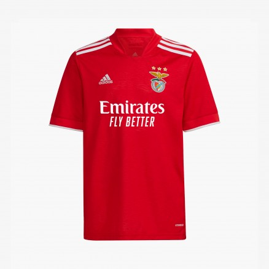

Le maillot est aux couleurs du club, rouge et blanc. On peut y retrouver dessus les sponsors, qui est emirates fly better au milieu, betano sur la manche gauche, sagres au dos et adidas sur le haut au coin gauche et à droite l’emblème du club qui est composé d'un aigle, symbolisant l'indépendance, l'autorité et la noblesse, d'un bouclier aux couleurs du club. L'acronyme S.L.B veut dire Sport Lisboa e Benfica. La roue de bicyclette représente le cyclisme qui fut une des premières disciplines du club. L'aigle est appelé Vitória, c'est un aigle ibérique qui survole les gradins du stade avant de se poser sur l'emblème, disposé dans le rond central, avant chaque match à domicile. Les 3 étoiles présentent sur leur maillot symbolisent la trentaine de championnats remportés jusqu'à présent.
